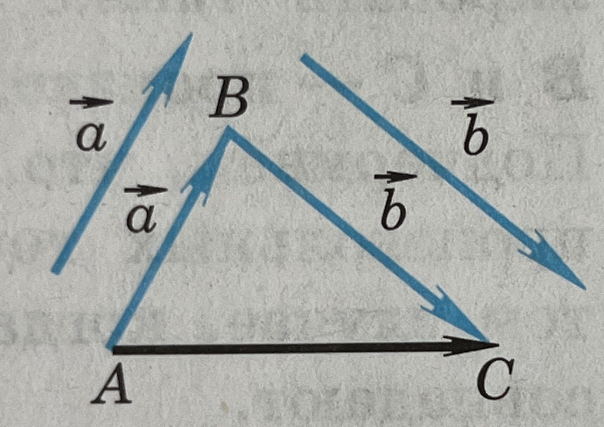
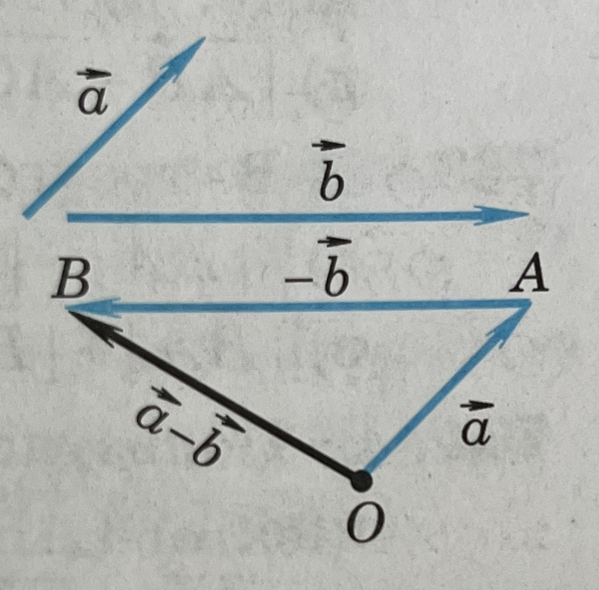

Векторная величина - физическая величина, которые характеризуются не только своим числовым значением, но и направлением в пространстве.
Отрезок, для которого указано, какая из его граничных точек считается началом, а какая - концом, называется направленным отрезком или вектором.
Длиной или модулем ненулевого вектора называется длина отрезка.
Равенство векторов
Ненулевые векторы называются коллинеарными, если они лежат либо на одной прямой, либо на параллельных прямых.
Нулевой вектор считается коллинеарным любому вектору.
Если два ненулевых коллинеарных вектора направлены одинаково, то они называются сонаправленными, если противоположно, то противоположно направленными.
Векторы называются равными, если они сонаправлены и их длины равны.
Откладывание вектора от данной точки
Если точка А - начало вектора a⃗ , то говорят что вектор a⃗ отложен от точки А.
От любой точки М можно отложить вектор, равный данному вектору a⃗ , и притом только один.
Сумма двух векторов
Правило треугольника:
Пусть a⃗ и b⃗ - два вектора. Отметим произвольную точку А и отложим от этой точки вектор AB⃗, равный a⃗. Затем от точки В отложим вектор BC⃗, равный b⃗. Вектор AC⃗ называется суммой векторов a⃗ и b⃗.
Для любого вектора a⃗ справедливо равенство a⃗ + 0⃗ = a⃗.

Законы сложения векторов
Для любых векторов a⃗, b⃗ и c⃗ справедливы равенства:
На рисунке показано построение суммы векторов a⃗, b⃗, b⃗: от произвольной точки А отложен вектор AB⃗ = a⃗, затем от точки В отложен вектор BC⃗= b⃗ и, наконец, от точки С отложен вектор CD⃗ = с⃗. В результате получается вектор AD⃗ = a⃗ + b⃗ + c⃗.
Вычитание векторов
Разностью векторов a⃗ и b⃗ называется такой вектор, сумма которого с вектором b⃗ равна вектору a⃗.
Вектор a⃗1 называется противоположным вектору a⃗, если эти векторы имеют равные длины и противоположно направлены.
Теорема: для любых векторов a⃗ и b⃗ справедливо равенство a⃗ - b⃗ = a⃗ + (-b⃗).
Построение разности
Отметим на плоскости произвольную точку О и отложим от этой точки вектор ОА⃗ = а⃗.
Затем от точки А отложим вектор АВ⃗ = -b⃗
По теореме о разности векторов а⃗ - b⃗ = а⃗ + (-b⃗), поэтому а⃗ - b⃗ = OA⃗ + АB⃗ = ОВ⃗, т.е. вектор OB⃗ искомый.

Умножение вектора на число
Произведением ненулевого вектора a⃗ на число k называется такой вектор b⃗, длина которого равна |k| * |a⃗|, причем векторы a⃗ и b⃗ сонаправлены при k ≥ 0 и противоположно направлены при k < 0.
Произведение любого вектора на число нуль есть нулевой вектор;
Для любого числа k и любого вектора a⃗ векторы a⃗ и k a⃗ коллинеарны.
Для любых чисел k, l и любых векторов a⃗ и b⃗ справедливы равенства:
1.(kl) a⃗ = k (l a⃗) (сочетательный закон)
2.(k + l) a⃗ = k a⃗ + l a⃗ (первый распределительный закон)
3.k( a⃗ + b⃗) = k a⃗ + k b⃗ (второй распределительный закон)
Средняя линия трапеции
Средняя линии трапеции - отрезок, соединяющий середины ее боковых сторон.
Теорема: средняя линия трапеции параллельна основаниям и равна их полусумме.
Разложение вектора по двум неколлинеарным векторам
Лемма: если векторы a⃗ и b⃗ коллинеарны и a⃗ ≠ 0⃗, то существует такое число k, что b⃗ = ka⃗
Теорема: На плоскости любой вектор можно разложить по двум данным неколлинеарным векторам, причем коэффиценты разложения определяются единственным образом.
Координаты вектора
Координаты равных векторов соответственно равны
--- Каждая координата суммы двух или более векторов равна сумме соответствующих координат этих векторов.
--- Каждая координата разности двух векторов равна разности соответствующих координат этих векторов.
--- Каждая координата произведения вектора на число равна произведению соответствующей координаты вектора на это число.
Связь между координатами вектора и координатами его начала и конца.
Координаты точки равны соответствующим координатам ее радиус-вектора.
Каждая координата вектора равна разности соответствующих координат его конца и начала.
Уравнение окружности
В прямоугольной системе координат уравнение окружности радиуса r с центром в точке C(x0; y0) имеет вид:
(x - x0)2 + (y - y0)2 = r2
Уравнение прямой
Уравнение прямой в прямоугольной системе координат является уравнением первой степени.
y = kx + d
k - угловой коэффицент прямой.
Две параллельные прямые, не параллельные оси Oy, имеют одинаковые угловые коэффиценты.